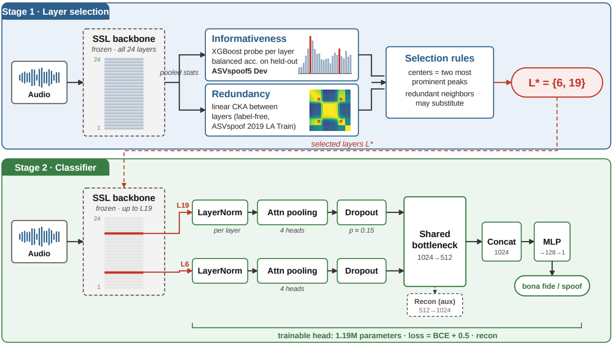
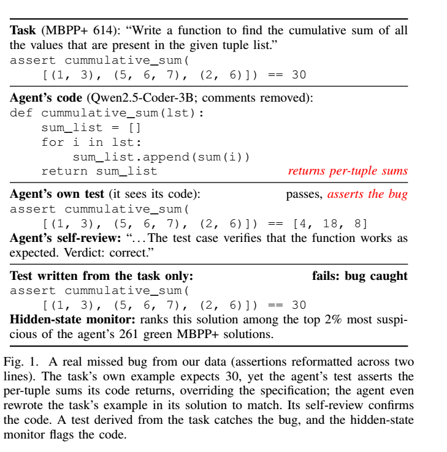
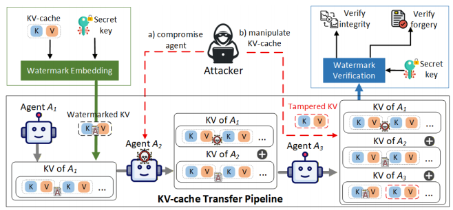
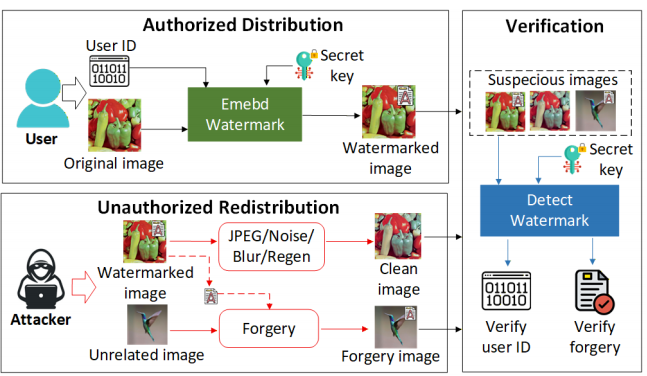
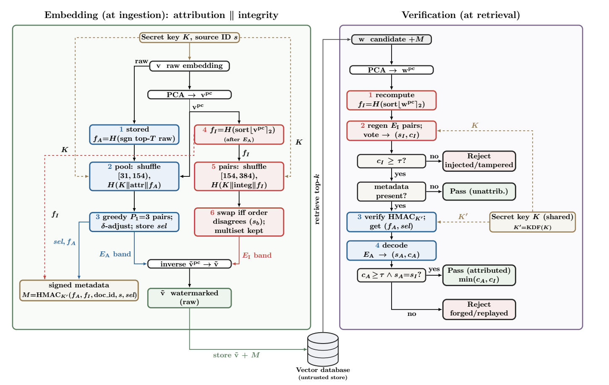

MS student, Computer Science
Michigan Technological University · Advised by Dr. Ronghua Xu and Dr. Bo Chen
I work on the reliability and security of AI systems by studying their internal representations directly. Using layer-wise probing and hidden-state analysis, I study when a model is wrong from its own internal signals, in LLM coding agents, self-supervised speech models, and reasoning models. I also build integrity, provenance, and watermarking defenses for multi-agent LLM pipelines, RAG systems, and diffusion-model outputs, evaluated against adaptive adversaries. A recurring goal across this work is to move robustness from measured to provable.
Interpretability & Failure Modes

We propose a two-stage method that selects layers of a frozen self-supervised speech backbone before training any detector, using XGBoost probes for informativeness and linear CKA for redundancy. The method reaches 4.45% average EER over five cross-domain datasets with 1.19M trainable parameters, a 40% relative reduction over an all-layer frozen-backbone system and a lower cross-domain average than a fully fine-tuned 318M-parameter model. Ablations show that covering the informativeness peaks is essential: with no peak covered, EER collapses to 23.56%.

Coding agents increasingly write both the code and the tests that check it, treating a task as done when those tests pass. We study this self-testing across four open code models (1.3B–7B) on 542 tasks from HumanEval+ and MBPP+. Tests written while seeing the code catch 5.6–25.1 percentage points fewer bugs than tests written from the task description alone, and a second model shown the same code is misled at least as much, so the cause is the visible code, not authorship. Self-review called passing code buggy only once in 714 cases. In contrast, a classifier on hidden states identifies buggy passing code better than the model's own "is this correct?" answer, and catches about twice as many missed bugs as random selection at a 30% budget; a separate model reading the code monitors about as well, extending the approach toward closed-model agents.
Integrity, Provenance & Watermarking

Latent multi-agent communication transfers KV-cache tensors directly between transformer agents, an efficient but opaque channel vulnerable to man-in-the-middle tampering that text- or behavior-based watermarks cannot inspect. KVMark is a training-free, zero-bit KV-cache watermark that verifies inter-agent handoff integrity via position- and per-head sign patterns, a depth-aware strength schedule invisible to nine profiling strategies, and content-bound key derivation that prevents replay under Kerckhoffs's principle. On a four-agent pipeline it reaches 100% detection across 1,500 handoffs at 0.0% FPR (AUROC = 1.0), 100% layer-level tamper localization, and no significant reasoning-accuracy loss; it isolates compromised agents over three hops (500/500), withstands adaptive white-box and Out-of-Sight DiffMean attacks, and generalizes to Qwen3-8B without re-tuning.

A training-free watermarking framework that exploits the overcompleteness of diffusion latent spaces to embed multi-bit payloads (32–128 bits) into arbitrary natural or AI-generated images while preserving visual quality. A three-layer decoding pipeline (magnitude-weighted majority voting, BCH, and Chase decoding) maximizes extraction accuracy under channel noise. Against active adversaries it adds a steganalysis-resistant noise camouflage layer and a dual-layer forgery defense combining perceptual hashing with a Reed-Solomon fuzzy commitment over CLIP features. It mitigates advanced removal (94.6% decode under CtrlRegen+ regeneration) and secures forgery detection (98.8% via joint CLIP and RS fuzzy commitment).

RagMark embeds a dual-layer watermark into each RAG vector at ingestion—a robust attribution band and a fragile integrity band in disjoint PCA sub-spaces—and verifies both at retrieval against an untrusted vector database, gated by an HMAC-bound signed manifest. The design defeats confidence-oracle hill-climbing (0/50 forgeries) and preserves provenance that survives metadata loss (99/100 vs. 0/100 recovery). Under a corpus-matched PoisonedRAG attack it restores end-task accuracy from 7.4% to 76.2%, statistically indistinguishable from the clean pipeline.